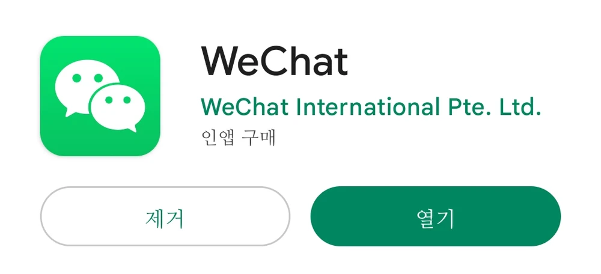
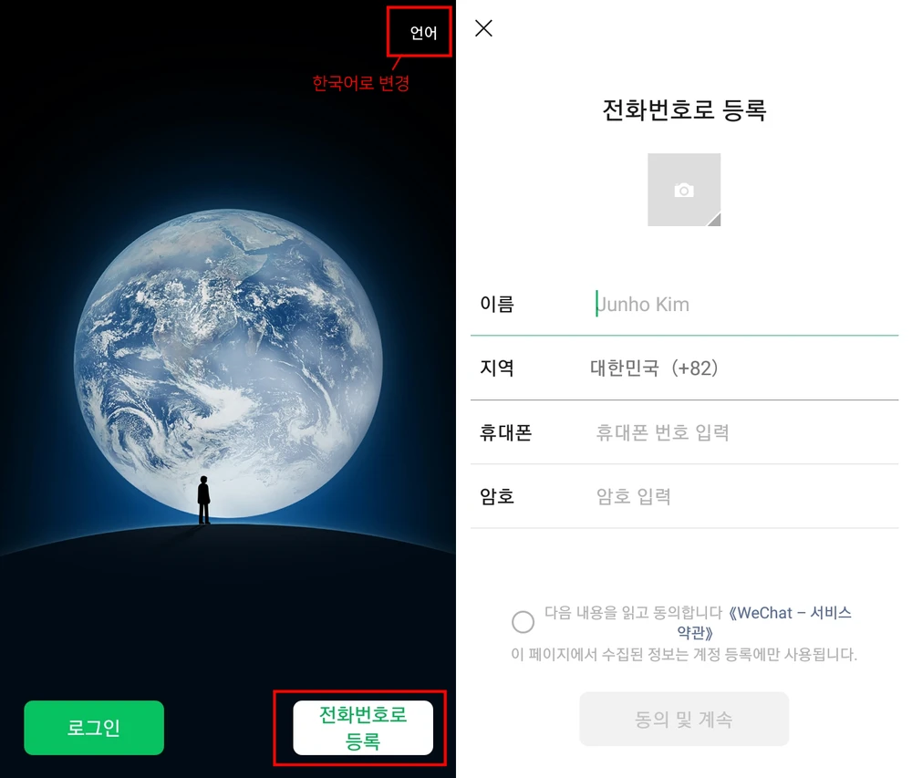

[솜인형 제작 전 준비하기]
1. 도안 준비
(도안 예시)
인형을 만들기 위해서는 무엇보다 만들고 싶은 인형의 도안이 필요합니다.
개인적으로 도안을 직접 그려서 준비해도 되고, 요즘에는 도안 커미션을 받는 분들도 계셔 커미션을 맡기셔도 좋습니다.
2. 소통수단(위챗) 준비
도안이 준비되었다면 위챗(WeChat)이라는 중국 메신저 어플을 준비해야 합니다.
스토어에서 위챗을 검색 후 설치해주세요.

우측 상단에서 [언어]를 한국어로 변경 후 [전화번호로 등록]을 눌러 가입을 해줍니다.
정보를 입력해주고 전화번호 인증 후 가입을 완료합니다.
3. 공장 찾기
1) 웨이보 (https://weibo.com/)
1. 玩偶定制 인형 맞춤 제작
2. 玩偶定制 新厂 인형 맞춤 제작 신 공장
웨이보는 공장을 찾는데 가장 기본적인 방법입니다.
굳이 회원가입을 하지 않아도 검색이 가능하기에 너무 어렵게 생각하지 않아도 됩니다.
상단의 중국어를 검색하면 해당 단어를 포함하고 있는 공장이 검색되거나, 공장에서 제작한 후기 글들이 검색됩니다.
2) X (구 트위터) (https://x.com/)
나의_공장을_소개합니다 : 후기
#우리_공장을_소개합니다 : 공장자체 홍보
#우리_공장으로_오세요 : 공장자체 홍보
#망한갠제대회 : 불호 후기
해당 해시태그들로 검색하면 많은 사람들이 공장에서 제작한 후기를 남겨둡니다.
후기를 보고 괜찮은 공장을 찾았다면 공장을 꼭 다양하게 검색해보세요.
4. 공장 고르기
무엇을 우선으로 공장을 고를 것인지 기준을 정해야 합니다.
소통 / 퀄리티 / 가격 / 시간
보통은 이 네 가지를 기준으로 찾아보시면 됩니다.
* 소통
"대답이 친절한" 공장은 굳이 우선 순위에 둘 필요는 없습니다.
착한 공장이란 자신들이 실수했을 때 인정하고 추가금 없이 수정해주는 공장이지,
대답이 빠르고 잘 웃어주지만 자기네 실수는 알 바 아니고
수정하고 싶으면 돈을 추가적으로 지불하라는 공장이 아니기 때문입니다.
소통이 기준인 이유는 어디까지나 며칠에 한 번씩 대답해주는 공장을 거르라는 의미 입니다.
혹은 외국인과 위챗하는 과정이 무섭고, 그냥 본인에게 친절하게 대해주는 공장을 원한다면
X(구 트위터) 계정 내의 대리인이 있거나 한국어로 상담이 가능한 공장을 찾으시는 것을 추천합니다.
* 퀄리티
웨이보의 팔로워 수가 많거나(3000 ~ 7000대), 미디어에 생산 샘플이 많거나,
국내에서 많이 알려진 메이저 공장을 고르면 됩니다.
물론 웨이보 팔로워 수가 많다고 꼭 좋은 공장은 아니지만,
어느정도 노하우나 경험이 많이 마련되어 있다는 뜻이니 실패할 확률이 적습니다.
* 가격
보통은 귀, 꼬리가 없는 단순 도안으로 무료수정 1회 포함 기준 600위안 시작이면 저렴한 편입니다.
해당 가격은 추가금이 붙은 총 가격이 아닌 20cm 인형 기준 기본가(시작가)를 의미합니다.
무료 수정이 없는 곳은 보통 500위안부터 시작합니다.
이따금 무료 수정 없이 300위안, 199위안 등 아주 저렴한 공장이 있지만,
샘플이나 웨이보 팔로워, 후기가 거의 없는 신생 공장이라면 추천하지 않습니다.
* 시간
빨리 나오는데 퀄리티도 어느정도 챙겨가되, 이것을 위해 지불할 자금이 충분하다면
메이저 공장에 급행을 요청하는 것이 가장 좋습니다.
혹은 팔로워수 1000 미만인 신생 공장에 제작을 맡기는 방법도 있습니다.
대부분의 작업기간이 평균 7일 ~ 15일로 매우 빠른 출고가 이루어집니다.
다만, 신생공장은 경험과 노하우가 부족하고, 샘플이 현저히 적기 때문에
말 그대로 도박임을 염두에 두는 것이 좋습니다.
+) 공장의 스타일
공장의 스타일은 공장에서 잘하는 인상이 무엇인지, 내 도안과 잘 맞을지 비교하는 것입니다.
공장의 샘플을 살펴보면 해당 공장이 어떤 인상의 솜인형을 잘 만드는지 알 수 있습니다.
내 도안이 날카로운 인상이라면 공장의 샘플 중에 날카로운 인상을 찾아보고,
내 도안이 눈이 동그랗고 큰 편이면 공장의 샘플 중에 동글동글한 인상의 인형이 있는지 찾아봅니다.
공장도 저마다 잘하는 인상이 다르기 때문에 샘플을 보면 어떤 것이 예쁘게 잘 나오는지,
어떤 인상에 약하고 못 만드는지 알 수 있습니다.
5. 공장 위챗 친구 신청하기
제작을 맡길 공장을 찾았다면 이제 공장과 위챗으로 대화를 해봅시다.
공장의 웨이보 상단에 보면 메세지에 VW / VX / WX / 🛰️라고 쓰여있습니다.
이것의 뒤에 있는 숫자나 영문이 바로 위챗 아이디 입니다.
위챗 아이디를 복사한 후, 위 사진의 순서대로 공장을 친구 추가하고 공장이 친구 추가를 받아줄 때 까지 기다립니다.
🧸 제작 과정은 상단의 [How to Make]에서 확인 할 수 있습니다! 🧸